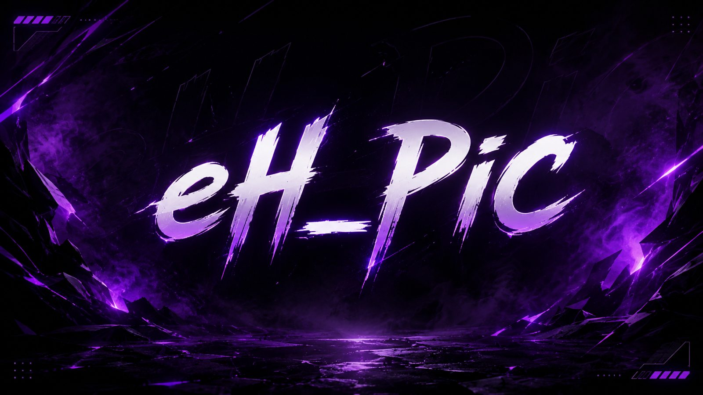

Send in your build. Get it measured, fixed and graded.
I load your exact build into Path of Building 2, the same calculator you use, find the changes that matter most within your budget, measure every one, and grade you against top players of your class and skill. Reviews happen live in the eH_PiC Discord and go up on YouTube.
Have these ready
- Your character name or PoB codeA public poe.ninja character name, a Path of Building code, or a pobb.in link.
- A way to reach youYour Discord name or an email, only for questions about your build.
- Two screenshotsrecommendedYour character sheet (the Defences part) and your main skill's tooltip, taken in town with no flasks or buffs running. You attach them to your Discord message.
- Your budgetA total in divines or exalts (or unlimited), and the most you would spend on one item.
- Whether you craftCrafters also get a craft-it-yourself route for each item, using what they have in stock.
- What must stayItems, gems or passives you will not change, whatever the numbers say.
- How you really playWhich buffs, charges, Rage and conditions are actually up in a fight. Calculators assume they always are.
From the form to your results
You fill in the form below and post it. The page turns your answers into one message. Copy it and paste it in the Discord channel where you found this link, with your screenshots.
Maybe a few questions. If your build needs something the form did not ask, such as how often a trigger fires, I message you on the contact you gave.
The review. Your build is checked, measured and priced. If my numbers do not match your own PoB or your screenshots, I find out why before anything is published.
A live session. I reach out to schedule a voice session in the Discord where we go through your build together: what works, what holds you back and exactly what to change. You also get a written reply with the fixes and a PoB code of your build with them applied.
The follow-up. Apply what you like and send a fresh PoB, or keep your character public. A later check shows whether your numbers moved the way the review said.
Your review
A report card
Damage and defence graded against players of your class and main skill, plus your weakest spots.
Ranked fixes
Each change measured on its own, with its price and the gain per divine spent.
Your fixed build
Every chosen fix applied together, gear, gems and tree, as a PoB code you can open.
What kills you
The biggest single hit you can take per damage type, before and after.
How the numbers are made
Your build, unchanged. It is loaded from poe.ninja or from the PoB code you sent, on an unmodified copy of Path of Building 2.
Checked against your own PoB. The review first confirms it reproduces the numbers saved in your PoB. If it does not, because of a different PoB version or a setting your export did not carry, the review stops until the difference is understood.
Checked against your character sheet. Life, energy shield, resistances and Spirit from your screenshots are compared with the calculator's. A mismatch blocks the review until it is explained.
One change at a time. Each suggested fix is measured on its own against your current build.
Then everything together. The headline result applies every featured fix to one copy of your build and measures them at once, because single gains do not simply add up.
Prices are asking prices on the date shown, from the trade site and poe.ninja's currency exchange. They are not sales, and they move every day.
What a calculator cannot see
How often a condition is true
PoB lets a build assume "enemy is chilled", "you crit recently" or "you are moving". The review lists every such assumption with what it is worth, shows a damage range from none of them to all of them, and asks which are real for you.
Triggered and meta skills
How often Cast on Block, Cast on Critical and similar fire depends on how you play. Without a rate from you, a triggered skill's damage is not trusted.
Flasks and charms
PoB counts their effects as always active. Mods that need an active charm are left out of suggestions for that reason.
Ground effects and clear speed
Area damage over time, on-kill effects and how fast a map gets cleared are mostly outside what the calculator measures. The numbers are single-target damage and effective health.
Several minion types
Each minion skill is measured on its own. The real total is closer to their sum.
Lines PoB cannot read
Some uniques, Idol bonds and newer mechanics have lines PoB ignores. They are listed in every review and never suggested for removal, because the calculator cannot know what they are worth.
Effective health moves a lot with small changes, so treat it as a guide. The biggest single hit you can take per damage type is closer to what actually kills you.
Graded against players of your class and skill
Damage and defence grades compare you with public characters of the same class and main skill on poe.ninja, using poe.ninja's own numbers for both sides. The grade is your share of the top players' median.
poe.ninja only shows the top 100 characters by damage and by defence. Outside that, the review says "outside the top 100" instead of inventing a percentile.
What a suggested item means
- A suggested item is the item you have plus the new line at a typical roll. One you buy or craft will differ a little.
- Replacing one chosen line on a finished rare is usually not practical, so the review suggests buying a replacement and lists the craft only as an option.
- Corrupted, fractured and mirrored items are respected: their locked lines are never suggested for change.
Consent and credit
Send in your build
Answer what you can. Nothing is sent from this page: it builds one message for you to paste in Discord. Your answers stay in this browser until you post them.